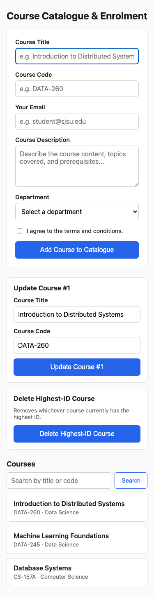
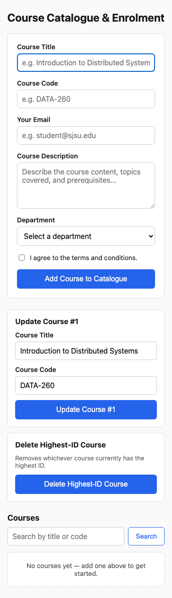
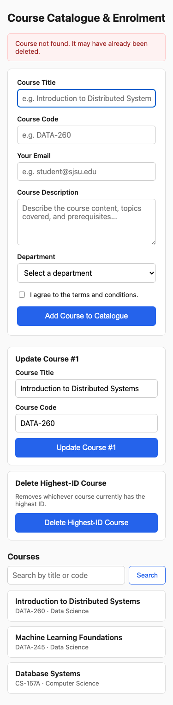
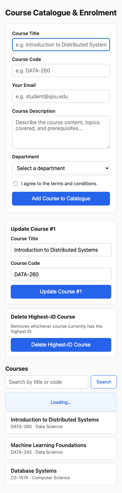
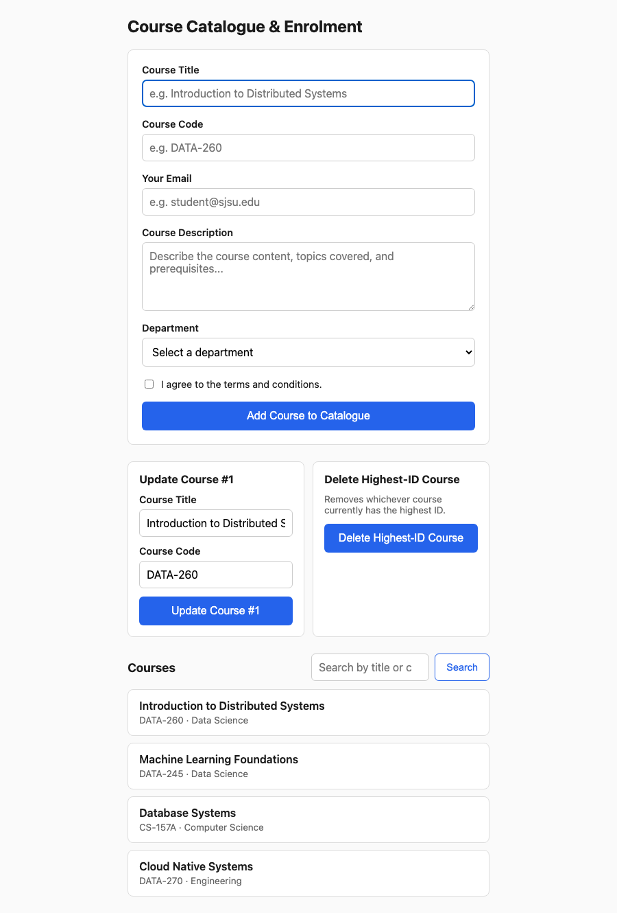
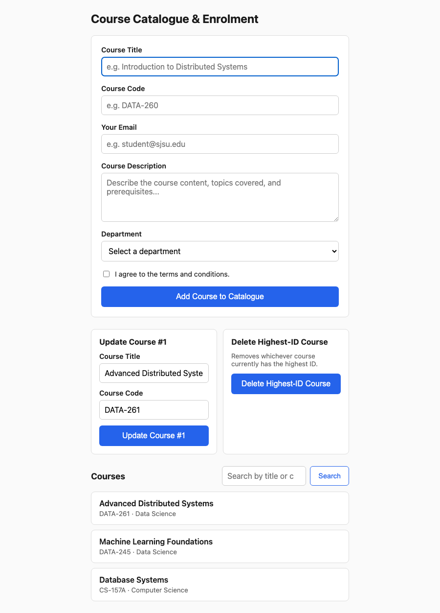
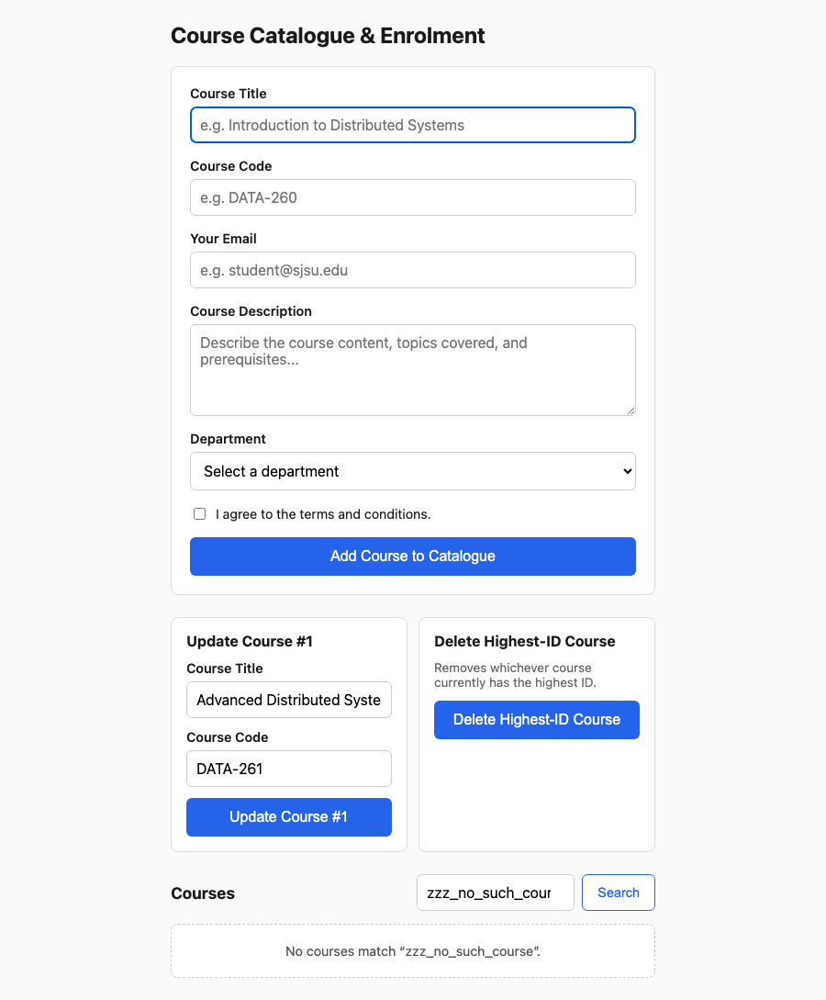
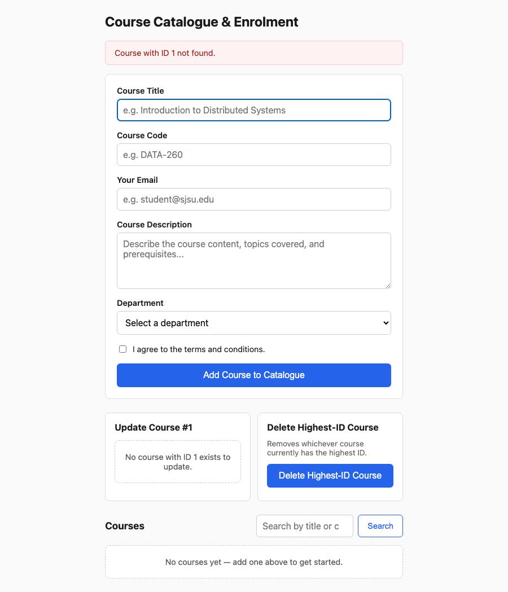

| Value | Definition |
|---|---|
| SID | 8360 |
| PORT_BASE | 8260 |
| PREFIX | s8360 |
| SEED | 8360 |
| VERIFY_SEED | 268360 |
| DOMAIN_ID | 0 |
| HARDWARE | MacBook Air, Apple M4, 16 GB RAM |
| Local Model Used | qwen3:8b Ollama Model |
| Tagged commit hash | d57ba70622ec96c8e760f6efa6bbfe4b6e4bb41d (tag: hw2) |
| Git repo | https://github.com/prags8585/data260-8360/tree/main |
Styled the Course Catalogue form and entity list so it stays usable at 375px width, and added visible loading, empty, and error states. Since the assignment's Part 2 language ("redirected to the home view showing the updated list") describes a server-rendered pattern, I rebuilt the page as a FastAPI + Jinja2 app instead of the static HW1 page — forms POST directly to the server and the server redirects back to a freshly rendered home page. This became the foundation Part 2 builds real data onto.
Verified the form, the Update/Delete cards, and the course list all remain fully usable at 375px — nothing overflows, buttons stay full-width and tappable, and the two management cards stack vertically instead of squeezing side by side.

Shown whenever the course list has zero results (either because no courses exist yet, or because a search matched nothing).

A red banner driven by a flash-style ?error= query parameter. Part 2's create/update/delete routes redirect here with a message whenever something goes wrong (missing required fields, deleting an empty list, etc.) instead of crashing.

The instant any form is submitted, a small script shows a "Loading..." indicator before the browser finishes navigating to the new page. The create route also has a short artificial delay so this is genuinely visible instead of flashing by instantly on a fast local server.

<!DOCTYPE html>
<html lang="en">
<head>
<meta charset="UTF-8">
<meta name="viewport" content="width=device-width, initial-scale=1.0">
<title>HW2-Karthik Pragada</title>
<link rel="stylesheet" href="/static/style.css">
</head>
<body>
<h1>Course Catalogue & Enrolment</h1>
{% if error %}
<div class="banner banner-error" role="alert">{{ error }}</div>
{% endif %}
<form id="courseForm" method="POST" action="/courses" class="course-form">
<div class="field">
<label for="courseTitle">Course Title</label>
<input type="text" id="courseTitle" name="courseTitle"
placeholder="e.g. Introduction to Distributed Systems" required autofocus>
</div>
<div class="field">
<label for="courseCode">Course Code</label>
<input type="text" id="courseCode" name="courseCode"
placeholder="e.g. DATA-260" required>
</div>
<div class="field">
<label for="email">Your Email</label>
<input type="email" id="email" name="email"
placeholder="e.g. student@sjsu.edu" required>
</div>
<div class="field">
<label for="description">Course Description</label>
<textarea id="description" name="description"
placeholder="Describe the course content, topics covered, and prerequisites..." required></textarea>
</div>
<div class="field">
<label for="department">Department</label>
<select id="department" name="department" required>
<option value="" disabled selected>Select a department</option>
<option value="Computer Science">Computer Science</option>
<option value="Data Science">Data Science</option>
<option value="Business">Business</option>
<option value="Engineering">Engineering</option>
</select>
</div>
<div class="field checkbox-field">
<input type="checkbox" id="agreeTerms" name="agreeTerms">
<label for="agreeTerms">I agree to the terms and conditions.</label>
</div>
<button type="submit">Add Course to Catalogue</button>
</form>
<section class="manage-section">
<div class="manage-card">
<h2>Update Course #1</h2>
{% if course_1 %}
<form method="POST" action="/courses/1/update" class="inline-form">
<div class="field">
<label for="update1Title">Course Title</label>
<input type="text" id="update1Title" name="courseTitle" value="{{ course_1.courseTitle }}" required>
</div>
<div class="field">
<label for="update1Code">Course Code</label>
<input type="text" id="update1Code" name="courseCode" value="{{ course_1.courseCode }}" required>
</div>
<button type="submit">Update Course #1</button>
</form>
{% else %}
<p class="state-banner empty-state">No course with ID 1 exists to update.</p>
{% endif %}
</div>
<div class="manage-card">
<h2>Delete Highest-ID Course</h2>
<p class="manage-hint">Removes whichever course currently has the highest ID.</p>
<form method="POST" action="/courses/delete-highest" class="inline-form">
<button type="submit" class="danger-button">Delete Highest-ID Course</button>
</form>
</div>
</section>
<section class="list-section">
<div class="list-header">
<h2>Courses</h2>
<form method="GET" action="/" class="search-form">
<input type="search" name="q" placeholder="Search by title or code" value="{{ q or '' }}">
<button type="submit">Search</button>
</form>
</div>
<div id="loadingState" class="state-banner loading-state"{% if state != 'loading' %} hidden{% endif %}>Loading…</div>
{% if courses|length == 0 %}
<p class="state-banner empty-state">
{% if q %}No courses match “{{ q }}”.{% else %}No courses yet — add one above to get started.{% endif %}
</p>
{% else %}
<ul class="course-list">
{% for c in courses %}
<li class="course-card">
<div class="course-card-title">{{ c.courseTitle }}</div>
<div class="course-card-meta">{{ c.courseCode }} · {{ c.department }}</div>
</li>
{% endfor %}
</ul>
{% endif %}
</section>
<script src="/static/script.js"></script>
</body>
</html>// Progressive enhancement only -- forms are real HTML forms that POST/GET
// to the server and navigate normally (server-rendered, Post/Redirect/Get
// pattern). This just shows a loading indicator the instant a form is
// submitted, before the browser finishes navigating to the new page.
document.addEventListener('DOMContentLoaded', () => {
const loadingState = document.getElementById('loadingState');
if (!loadingState) return;
document.querySelectorAll('form').forEach((form) => {
form.addEventListener('submit', () => {
loadingState.hidden = false;
});
});
});Built a FastAPI backend on PORT_BASE (8260) with real in-memory CRUD for the Course entity, replacing Part 1's mock data. All four routes redirect back to the home view showing the updated list, matching the assignment's Post/Redirect/Get pattern.
Filled out the form (title, code, email, description, department, terms checkbox) and submitted. The new course is appended and appears at the end of the list after the redirect.
Before:
After (added "Cloud Native Systems / DATA-270"):
A small "Update Course #1" form, pre-filled with whatever course #1 currently holds, lets me submit new title/code values specifically for that record.
Before (course #1 is "Introduction to Distributed Systems / DATA-260"):

After (updated to "Advanced Distributed Systems / DATA-261"):
The "Delete Highest-ID Course" button always removes whichever record currently has the maximum ID — at this point that's "Cloud Native Systems" (ID 4, the one just created in step 1).
Before:
After (Cloud Native Systems removed, back to 3 courses):

Typing into the search box and submitting filters the list to only courses whose title or code contains the query (case-insensitive).
Search "data" — matches all three remaining courses (via title or course code):
Search with no matches — falls back to the empty state from Part 1:

Tested two edge cases to make sure the app fails gracefully instead of crashing:

"""FastAPI backend for the Course Catalogue app (HW2 Part 2).
Real in-memory CRUD for the Course entity: create, update record #1,
delete the highest-ID record, and search by primary/secondary field.
Server-rendered (Jinja2), Post/Redirect/Get throughout.
"""
import asyncio
from fastapi import FastAPI, Form, Request
from fastapi.responses import RedirectResponse
from fastapi.staticfiles import StaticFiles
from fastapi.templating import Jinja2Templates
app = FastAPI()
app.mount("/static", StaticFiles(directory="static"), name="static")
templates = Jinja2Templates(directory="templates")
# In-memory store. Seeded with a few rows so the list isn't empty on first run.
COURSES: list[dict] = [
{"id": 1, "courseTitle": "Introduction to Distributed Systems", "courseCode": "DATA-260",
"email": "karthik.pragada@sjsu.edu",
"description": "Consensus, replication, partitioning, and fault tolerance in distributed systems.",
"department": "Data Science"},
{"id": 2, "courseTitle": "Machine Learning Foundations", "courseCode": "DATA-245",
"email": "karthik.pragada@sjsu.edu",
"description": "Supervised and unsupervised learning, model evaluation, and feature engineering.",
"department": "Data Science"},
{"id": 3, "courseTitle": "Database Systems", "courseCode": "CS-157A",
"email": "karthik.pragada@sjsu.edu",
"description": "Relational modeling, SQL, transactions, and indexing.",
"department": "Computer Science"},
]
_next_id = 4
def _get_next_id() -> int:
global _next_id
course_id = _next_id
_next_id += 1
return course_id
def _find_by_id(course_id: int) -> dict | None:
return next((c for c in COURSES if c["id"] == course_id), None)
@app.get("/")
def home(request: Request, q: str = "", state: str = "", error: str = ""):
courses = COURSES
if state == "empty":
courses = []
elif q:
needle = q.lower()
courses = [
c for c in courses
if needle in c["courseTitle"].lower() or needle in c["courseCode"].lower()
]
course_1 = _find_by_id(1)
return templates.TemplateResponse(
request,
"index.html",
{"courses": courses, "q": q, "error": error, "course_1": course_1, "state": state},
)
@app.post("/courses")
async def create_course(
courseTitle: str = Form(...),
courseCode: str = Form(...),
email: str = Form(""),
description: str = Form(""),
department: str = Form(""),
agreeTerms: str | None = Form(None),
):
if not courseTitle.strip() or not courseCode.strip():
return RedirectResponse(url="/?error=Course+title+and+code+are+required.", status_code=303)
# Artificial delay so the loading state (Part 1) stays genuinely visible.
await asyncio.sleep(1.5)
COURSES.append({
"id": _get_next_id(),
"courseTitle": courseTitle.strip(),
"courseCode": courseCode.strip(),
"email": email.strip(),
"description": description.strip(),
"department": department,
"agreeTerms": bool(agreeTerms),
})
return RedirectResponse(url="/", status_code=303)
@app.post("/courses/1/update")
async def update_course_1(courseTitle: str = Form(...), courseCode: str = Form(...)):
course = _find_by_id(1)
if course is None:
return RedirectResponse(url="/?error=Course+with+ID+1+not+found.", status_code=303)
if not courseTitle.strip() or not courseCode.strip():
return RedirectResponse(url="/?error=Course+title+and+code+are+required.", status_code=303)
course["courseTitle"] = courseTitle.strip()
course["courseCode"] = courseCode.strip()
return RedirectResponse(url="/", status_code=303)
@app.post("/courses/delete-highest")
async def delete_highest_course():
if not COURSES:
return RedirectResponse(url="/?error=No+courses+to+delete.", status_code=303)
highest = max(COURSES, key=lambda c: c["id"])
COURSES.remove(highest)
return RedirectResponse(url="/", status_code=303)Refactored HW1's sequential Planner → Reviewer → Finalizer pipeline (agents_demo.py) into a LangGraph StateGraph (agent_graph.py) built around a supervisor node that re-evaluates where to go next after every node finishes, so the graph can loop back to the Planner for self-correction instead of always running straight through. A deterministic router_logic() function (no LLM call) inspects the shared state on each supervisor visit and decides the next node: it checks a turn_count ceiling first (a safety valve against runaway loops), then whether a proposal exists yet, then whether that proposal has cleared the Part 4 schema gate, then whether the Reviewer has flagged issues. Both LLM-calling nodes (Planner, Reviewer) go through ModelClient from HW1 Part 4 — they never touch ChatOllama/LangChain directly.
Default demo input (distributed systems course), qwen3:8b, temperature 0.7. The Planner proposes 3 tags and a summary, the proposal passes the Part 4 schema gate, and the Reviewer approves it on the first pass ("has_issues": false), so the router sends control straight to END: 4 supervisor visits, 1 planner call, 0 retries, not abandoned.
$ python agent_graph.py --temperature 0.7
--- ROUTER: no proposal yet -> planner ---
=== after node: supervisor ===
--- NODE: Planner ---
{
"tags": [
"consensus algorithms",
"key-value store",
"leader election"
],
"summary": "This course teaches design and implementation of distributed systems with focus on fault tolerance and consensus protocols."
}
=== after node: planner ===
--- ROUTER: proposal not yet schema-validated -> validate ---
=== after node: supervisor ===
--- NODE: Validate (Pydantic) ---
valid
=== after node: validate ===
--- ROUTER: schema OK, not yet reviewed -> reviewer ---
=== after node: supervisor ===
--- NODE: Reviewer ---
{
"tags": ["consensus algorithms", "key-value store", "leader election"],
"summary": "This course teaches design and implementation of distributed systems with focus on fault tolerance and consensus protocols.",
"has_issues": false,
"feedback": ""
}
=== after node: reviewer ===
--- ROUTER: no issues -> END ---
=== after node: supervisor ===
======================================================================
FINALIZED (Publish)
======================================================================
{
"tags": ["consensus algorithms", "key-value store", "leader election"],
"summary": "This course teaches design and implementation of distributed systems with focus on fault tolerance and consensus protocols."
}
Total turns (supervisor visits): 4
Planner calls: 1 (retries: 0)
Abandoned at ceiling: False
Latency: 9742 msreviewer_node has a --force-issue testing hook: it overrides whatever the model actually said and always reports has_issues: true, so the reviewer→planner loop-back edge can be proven to fire on demand rather than assuming it works from a single lucky run. This run also passes a deliberately tight --ceiling 4 to exercise the turn-ceiling safety valve at the same time: the Planner drafts, the Reviewer force-rejects it, the router sends control back to the Planner for a revised draft — but by the time that second Planner call finishes, turn_count has climbed to 5, which exceeds ceiling=4, so the router ends the graph before the revised draft is ever re-validated or re-reviewed. The deterministic finalize() function (a non-LLM safety net, same idea as HW1's Finalizer) still publishes the best draft available — the unreviewed revision — instead of crashing or returning nothing, which is exactly the abandoned-at-ceiling case it exists to handle.
$ python agent_graph.py --temperature 0.7 --force-issue --ceiling 4
--- ROUTER: no proposal yet -> planner ---
=== after node: supervisor ===
--- NODE: Planner ---
{
"tags": ["consensus algorithms", "key-value store", "leader election"],
"summary": "A course on designing distributed systems with focus on consensus, fault tolerance, and leader election protocols."
}
=== after node: planner ===
--- ROUTER: proposal not yet schema-validated -> validate ---
=== after node: supervisor ===
--- NODE: Validate (Pydantic) ---
valid
=== after node: validate ===
--- ROUTER: schema OK, not yet reviewed -> reviewer ---
=== after node: supervisor ===
--- NODE: Reviewer ---
{
"tags": ["consensus algorithms", "key-value store", "leader election"],
"summary": "A course on designing distributed systems with focus on consensus, fault tolerance, and leader election protocols.",
"has_issues": true,
"feedback": "(forced for testing the correction loop)"
}
=== after node: reviewer ===
--- ROUTER: issues found -> planner (self-correction) ---
=== after node: supervisor ===
--- NODE: Planner ---
{
"tags": ["distributed systems design", "fault tolerance implementation", "leader election protocol"],
"summary": "A course on designing distributed systems with focus on consensus, fault tolerance, and leader election protocols."
}
=== after node: planner ===
--- ROUTER: turn ceiling (4) reached -- ending ---
=== after node: supervisor ===
======================================================================
FINALIZED (Publish)
======================================================================
{
"tags": ["distributed systems design", "fault tolerance implementation", "leader election protocol"],
"summary": "A course on designing distributed systems with focus on consensus, fault tolerance, and leader election protocols."
}
Total turns (supervisor visits): 5
Planner calls: 2 (retries: 1)
Abandoned at ceiling: True
Latency: 7854 msdef router_logic(state: AgentState) -> str:
"""Reads the state and decides which node runs next."""
if state.get("turn_count", 0) > TURN_CEILING_DEFAULT:
print(f"--- ROUTER: turn ceiling ({TURN_CEILING_DEFAULT}) reached -- ending ---")
return END
if not state.get("planner_proposal"):
print("--- ROUTER: no proposal yet -> planner ---")
return "planner"
if not state.get("schema_checked"):
print("--- ROUTER: proposal not yet schema-validated -> validate ---")
return "validate"
feedback = state.get("reviewer_feedback")
if feedback and feedback.get("has_issues"):
print("--- ROUTER: issues found -> planner (self-correction) ---")
return "planner"
if not feedback:
print("--- ROUTER: schema OK, not yet reviewed -> reviewer ---")
return "reviewer"
print("--- ROUTER: no issues -> END ---")
return END
def build_graph():
graph = StateGraph(AgentState)
graph.add_node("supervisor", supervisor_node)
graph.add_node("planner", planner_node)
graph.add_node("validate", validate_node)
graph.add_node("reviewer", reviewer_node)
graph.set_entry_point("supervisor")
graph.add_conditional_edges(
"supervisor",
router_logic,
{"planner": "planner", "validate": "validate", "reviewer": "reviewer", END: END},
)
graph.add_edge("planner", "supervisor")
graph.add_edge("validate", "supervisor")
graph.add_edge("reviewer", "supervisor")
return graph.compile()Added a deterministic Pydantic validation gate (validate_node / TagsSummarySchema) between the Planner and Reviewer: exactly 3 tags, each 3–30 characters, summary at most 25 words. A schema failure is turned into a synthetic reviewer_feedback-shaped rejection and routed through the exact same has_issues loop-back path as a real Reviewer complaint, so the Planner sees one consistent retry mechanism whether the correction came from the deterministic gate or from the LLM reviewer.
Input: reports/hw02/cases/schema_input.json (a cloud-computing/Kubernetes course, chosen to be easy to tag precisely in 3 terms). The first proposal clears the schema gate and the Reviewer approves it immediately — 4 supervisor visits, 1 planner call, 0 retries.
$ python agent_graph.py --input reports/hw02/cases/schema_input.json --temperature 0.7
--- ROUTER: no proposal yet -> planner ---
=== after node: supervisor ===
--- NODE: Planner ---
{
"tags": ["cloud computing architectures", "kubernetes orchestration", "microservices design"],
"summary": "This course covers cloud computing, distributed systems, and Kubernetes for scalable application deployment on AWS and GCP."
}
=== after node: planner ===
--- ROUTER: proposal not yet schema-validated -> validate ---
=== after node: supervisor ===
--- NODE: Validate (Pydantic) ---
valid
=== after node: validate ===
--- ROUTER: schema OK, not yet reviewed -> reviewer ---
=== after node: supervisor ===
--- NODE: Reviewer ---
{
"tags": ["cloud computing architectures", "kubernetes orchestration", "microservices design"],
"summary": "This course covers cloud computing, distributed systems, and Kubernetes for scalable application deployment on AWS and GCP.",
"has_issues": false,
"feedback": ""
}
=== after node: reviewer ===
--- ROUTER: no issues -> END ---
=== after node: supervisor ===
======================================================================
FINALIZED (Publish)
======================================================================
{
"tags": ["cloud computing architectures", "kubernetes orchestration", "microservices design"],
"summary": "This course covers cloud computing, distributed systems, and Kubernetes for scalable application deployment on AWS and GCP."
}
Total turns (supervisor visits): 4
Planner calls: 1 (retries: 0)
Abandoned at ceiling: False
Latency: 6469 msInput: reports/hw02/cases/adversarial_input.json, a course description deliberately written to span ten unrelated CS subfields in one semester — hard to compress into 3 accurate, specific tags. The first proposal is mechanically valid (passes the schema gate) but the Reviewer rejects it as too narrow for the course's breadth ("too specific and do not reflect the broader scope"), so the Planner revises toward broader, more general tags. This time the Reviewer is satisfied ("has_issues": false) — but that approval comes on the graph's 7th supervisor visit, and router_logic() checks the turn ceiling before it ever looks at the Reviewer's feedback. Since turn_count=7 > ceiling=6, the router ends the run on the ceiling check without ever reaching the branch that would have read has_issues: false and sent it to END normally. The published output ends up identical either way (finalize() just republishes the same already-approved draft), but the run is still logged as abandoned_at_ceiling by the harness's turn_count > ceiling definition — a case where "abandoned" is a bookkeeping artifact of check ordering, not a sign the content is unfinished or wrong.
$ python agent_graph.py --input reports/hw02/cases/adversarial_input.json --temperature 0.7 --ceiling 6
--- ROUTER: no proposal yet -> planner ---
=== after node: supervisor ===
--- NODE: Planner ---
{
"tags": ["computer networking", "machine learning", "natural language processing"],
"summary": "A comprehensive course covering ten computer science subfields with weekly guest lectures and a final exam."
}
=== after node: planner ===
--- ROUTER: proposal not yet schema-validated -> validate ---
=== after node: supervisor ===
--- NODE: Validate (Pydantic) ---
valid
=== after node: validate ===
--- ROUTER: schema OK, not yet reviewed -> reviewer ---
=== after node: supervisor ===
--- NODE: Reviewer ---
{
"tags": ["computer networking", "machine learning", "natural language processing"],
"summary": "A comprehensive course covering ten computer science subfields with weekly guest lectures and a final exam.",
"has_issues": true,
"feedback": "Tags are too specific and do not reflect the broader scope of the course."
}
=== after node: reviewer ===
--- ROUTER: issues found -> planner (self-correction) ---
=== after node: supervisor ===
--- NODE: Planner ---
{
"tags": ["computer science survey", "multi-subfield course", "comprehensive final"],
"summary": "A semester-long course covering ten computer science areas with guest lectures and a comprehensive final exam."
}
=== after node: planner ===
--- ROUTER: proposal not yet schema-validated -> validate ---
=== after node: supervisor ===
--- NODE: Validate (Pydantic) ---
valid
=== after node: validate ===
--- ROUTER: schema OK, not yet reviewed -> reviewer ---
=== after node: supervisor ===
--- NODE: Reviewer ---
{
"tags": ["computer science survey", "multi-subfield course", "comprehensive final"],
"summary": "A semester-long course covering ten computer science areas with guest lectures and a comprehensive final exam.",
"has_issues": false,
"feedback": ""
}
=== after node: reviewer ===
--- ROUTER: turn ceiling (6) reached -- ending ---
=== after node: supervisor ===
======================================================================
FINALIZED (Publish)
======================================================================
{
"tags": ["computer science survey", "multi-subfield course", "comprehensive final"],
"summary": "A semester-long course covering ten computer science areas with guest lectures and a comprehensive final exam."
}
Total turns (supervisor visits): 7
Planner calls: 2 (retries: 1)
Abandoned at ceiling: True
Latency: 12224 msBeyond the single demo runs above, run_schema_experiment.py automates three repeated experiments through agent_graph.py's run() function (all with qwen3:8b, temperature 0.7) and writes per-run records to reports/hw02/raw/ plus a rolled-up summary to reports/hw02/raw/part4_summary.json. Each run is classified by classify() as valid_first_attempt, valid_after_1_retry, valid_after_2plus_retries, or abandoned_at_ceiling (per the run() function's own turn_count > ceiling definition of "abandoned").
| Experiment | n | Completion rate | Mean latency | Classification breakdown |
|---|---|---|---|---|
| Fixed input, ceiling=6 (4.3) | 30 | 100% | 5422 ms | 30/30 valid_first_attempt |
| Fixed input, ceiling=2 (4.4) | 20 | 0% | 2483 ms | 20/20 abandoned_at_ceiling |
| Fixed input, ceiling=10 (4.4) | 20 | 100% | 5856 ms | 20/20 valid_first_attempt |
| Adversarial input, ceiling=6 (4.5) | 5 | 0% | 14778 ms | 5/5 abandoned_at_ceiling (every run: 1 retry, turn_count=7) |
4.3 — retry behavior on a fixed, well-posed input: across 30 independent runs on schema_input.json, the Planner's first draft always cleared both the schema gate and the Reviewer — every run finished in exactly 4 supervisor visits with 0 retries. The self-correction loop exists for when it's needed, but on an input this unambiguous it never actually fires.
4.4 — ceiling comparison isolates a structural effect, not a model-quality one: the minimum number of supervisor visits for any successful run is 4 (planner → validate → reviewer → end-check). At ceiling=2, the router's ceiling check fires on the 3rd supervisor visit (turn_count=3 > 2) — before the Reviewer ever gets to run — so all 20 runs were abandoned regardless of how good the Planner's draft was, with a correspondingly low mean latency (2483 ms, since the graph is cut short). At ceiling=10 every run completed normally in 4 visits, identical in shape to the ceiling=6 baseline (5856 ms vs. 5422 ms, within normal LLM-latency noise). This shows the ceiling parameter has to be set with the graph's own minimum path length in mind, independent of how reliable the model is.
4.5 — the adversarial input reliably burns its one allotted retry: all 5 runs against adversarial_input.json needed exactly one self-correction retry, which puts the second Reviewer verdict at turn_count=7. Because router_logic() checks the turn ceiling before it ever inspects the Reviewer's feedback, that 7th visit is caught by the ceiling=6 check regardless of whether the second review actually approved the revision or not — so all 5 runs are logged as abandoned_at_ceiling under the script's strict turn_count > ceiling definition, with mean latency (14778 ms) roughly 2.7× the fixed-input baseline from the extra Planner/Reviewer round trip. As the single demo run above shows concretely (second review: "has_issues": false, yet still abandoned), "abandoned" here doesn't necessarily mean the published output is bad or unfinished — it can just mean the Reviewer's approval arrived one supervisor visit later than the ceiling check that decides whether anyone gets to read it.
class TagsSummarySchema(BaseModel):
"""Part 4 output contract: exactly 3 tags (3-30 chars each), summary <=25 words."""
tags: List[str]
summary: str
@field_validator("tags")
@classmethod
def check_tags(cls, v: List[str]) -> List[str]:
if len(v) != 3:
raise ValueError(f"must have exactly 3 tags, got {len(v)}")
for tag in v:
if not (3 <= len(tag) <= 30):
raise ValueError(f"tag {tag!r} must be 3-30 characters long (got {len(tag)})")
return v
@field_validator("summary")
@classmethod
def check_summary(cls, v: str) -> str:
word_count = len(v.split())
if word_count > 25:
raise ValueError(f"summary must be at most 25 words (got {word_count})")
return v
def validate_node(state: AgentState) -> Dict[str, Any]:
"""Deterministic Pydantic validation gate, no LLM call. On failure,
synthesizes a reviewer_feedback-shaped rejection so the existing has_issues
loop-back path sends it straight back to the Planner for a retry."""
proposal = state["planner_proposal"] or {}
try:
TagsSummarySchema(**proposal)
return {"schema_checked": True}
except ValidationError as exc:
error_msg = "; ".join(e["msg"] for e in exc.errors())
return {
"schema_checked": True,
"reviewer_feedback": {
"tags": proposal.get("tags", []),
"summary": proposal.get("summary", ""),
"has_issues": True,
"feedback": f"Schema validation failed: {error_msg}",
},
}
def classify(record):
if record["abandoned"]:
return "abandoned_at_ceiling"
if record["retries"] == 0:
return "valid_first_attempt"
if record["retries"] == 1:
return "valid_after_1_retry"
return "valid_after_2plus_retries"